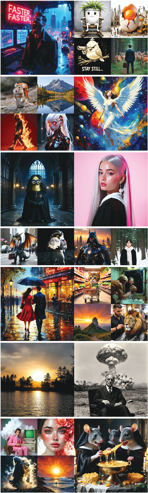

We present SwD, a scale-wise distillation framework of diffusion models (DMs), which effectively employs next-scale prediction ideas for diffusion-based few-step generators. In more detail, SwD is inspired by the recent insights relating diffusion processes to the implicit spectral autoregression. We suppose that DMs can initiate generation at lower data resolutions and gradually upscale the samples at each denoising step without loss in performance while significantly reducing computational costs. SwD naturally integrates this idea into existing diffusion distillation methods based on distribution matching. Also, we enrich the family of distribution matching approaches by introducing a novel patch loss enforcing finer-grained similarity to the target distribution. When applied to state-of-the-art text-to-image diffusion models, SwD approaches the inference times of two full resolution steps and significantly outperforms the counterparts under the same computation budget, as evidenced by both automated metrics and human preference studies.
1. Scale-wise Distillation
The generation process begins with Gaussian noise at the lowest resolution, such as 256×256.
At each step, the model upscales the previous prediction to a higher resolution, injects noise based on
the current timestep, and predicts a cleaner version of the image at the new resolution. This progressive
upscaling continues until the target resolution, like 1024×1024, is reached, resulting in a high-quality image.
The training pipeline for SwD involves sampling full-resolution images, downscaling them to lower resolutions,
and encoding them into the latent space. The latent representations are upscaled, noised based on the timestep,
and fed into the generator, which predicts clean latents at the target scale. A distribution matching loss
is then computed between the predicted and target latents. This process is repeated iteratively across multiple
scales, training the model to generate high-quality images progressively.
The figures below visually demonstrate the SwD training and inference pipelines.
Patch Distribution Matching (PDM) is a simple yet effective technique that aligns patch-level distributions between generated and target images. It uses Maximum Mean Discrepancy (MMD) with a linear kernel to match spatial token distributions from intermediate feature maps. PDM is computationally efficient, requires no additional models, and can function as a standalone distillation objective, making it a versatile and powerful addition to the SwD framework.
We conduct a human and automatic evaluation to compare our approach with state-of-the-art baselines. We observe that the proposed SwD outperforms the baseline approaches in most cases.